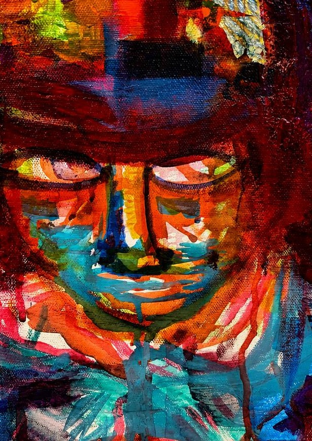
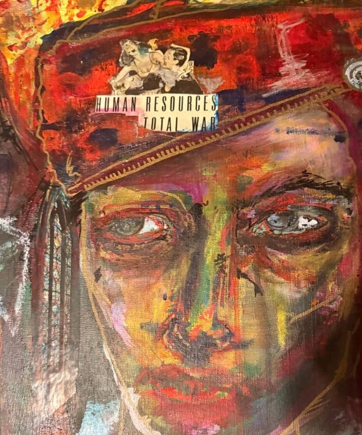
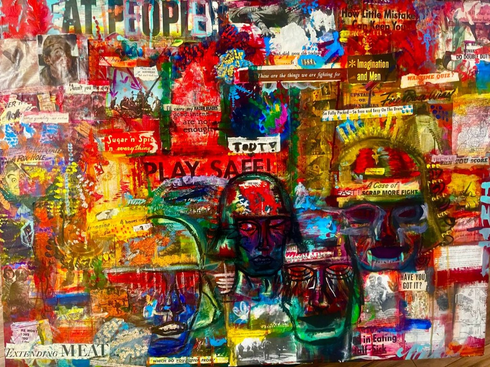
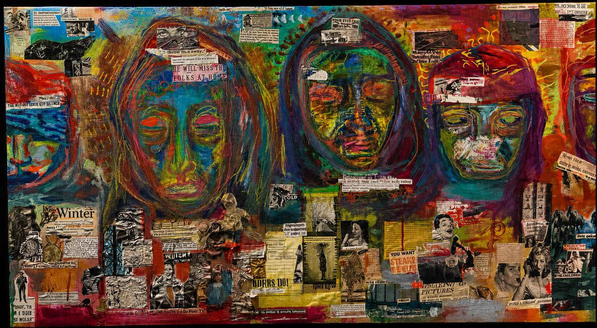
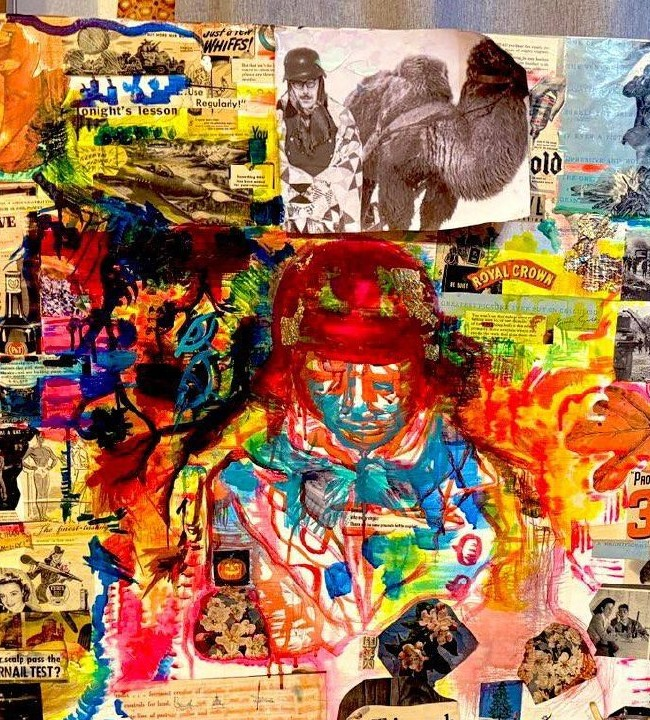
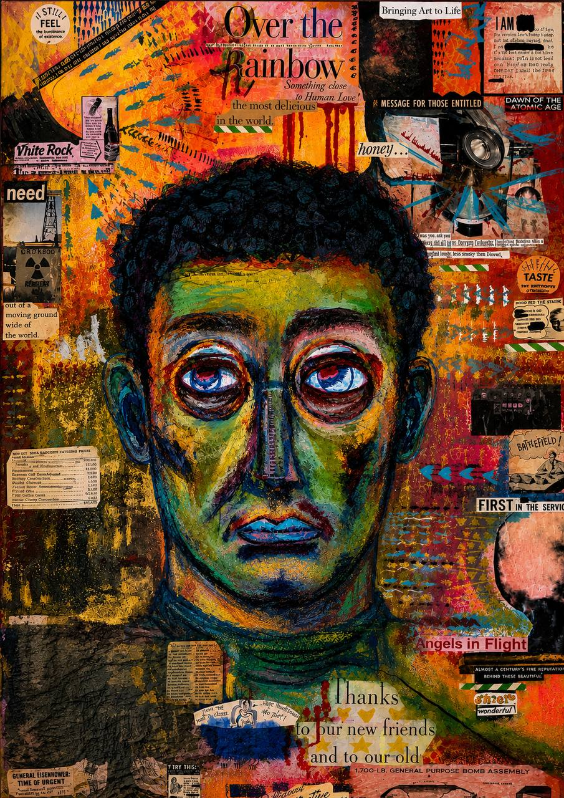
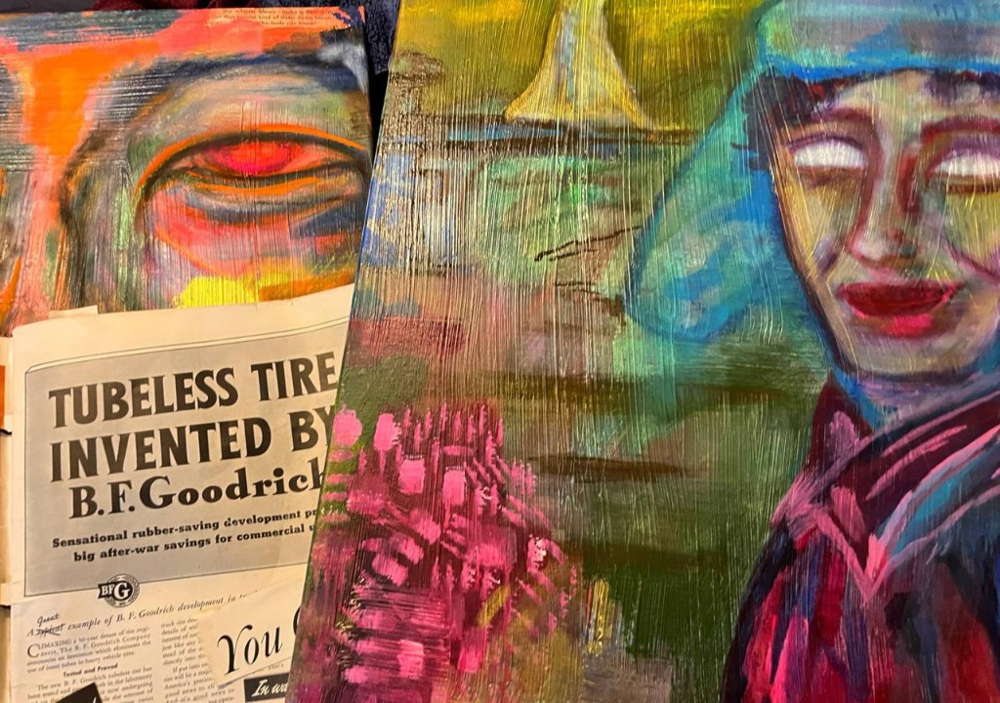

Barikardy Factory, November 1942
The factory kept producing after the roof was gone.
Source: period photograph, Barrikady works, Stalingrad, November 1942.
An inward encounter through the Eastern Front.

the work
You Are Still Inside It is a long-form, research-driven body of work centered on Stalingrad and the Eastern Front.
It does not illustrate history. It constructs a historical interior where unresolved presences remain active.
The figures are not treated as symbols, political arguments, or anonymous historical matter. They remain singular lives suspended between disappearance and recognition.
Working from wartime photographs, testimony, battlefield remnants, and archival material, the paintings dismantle and reconfigure surviving traces until something latent within them begins to surface again.
Many of these individuals never saw the photographs that now carry them.
works


reference photograph / archival source


reference photograph / archival source

reference photograph / archival source


reference photograph / archival source






what remains
I am drawn almost exclusively toward the unknown: the encircled, the half-erased, those absorbed into mass historical movement whose individuality nonetheless remains visible.
The paintings do not seek nostalgia, spectacle, or heroization.
They attempt to restore singular human presence within industrial annihilation.
conversation
An interview on the Eastern Front, archival encounter, historical memory, and the compulsion behind the work.
practice
The work develops through painting, collage, abrasion, layered pigment, and repeated return.
Historical material enters the studio through photographs, testimony, correspondence, maps, objects, and fragments.
The archive is not used as illustration. It is where the encounter begins.
Research and intuition remain inseparable within the work.

field notes / archive
Verified images, dates, and sources only. Unknown information is marked unverified.
The factory kept producing after the roof was gone.
Source: period photograph, Barrikady works, Stalingrad, November 1942.
German prisoners after the fall of Stalingrad.
Date: February 3, 1943. Archival photograph.
The moniker for the body of work: a position between memory and disappearance.
Title note. No archival claim.
about
The work proceeds from the understanding that certain historical conditions do not remain contained within chronology. They continue exerting pressure across generations: visually, psychologically, materially.
The front remains open.

correspondence
For exhibitions, residencies, publications, studio visits, archival exchange, and serious conversation concerning the work.
lethe
A position between memory and disappearance. The moniker under which the body of work proceeds.
